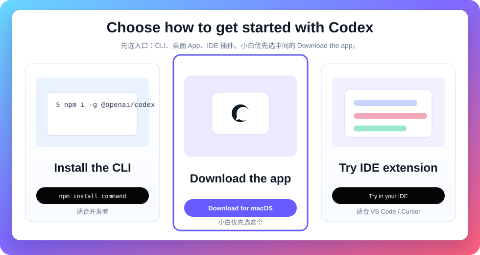
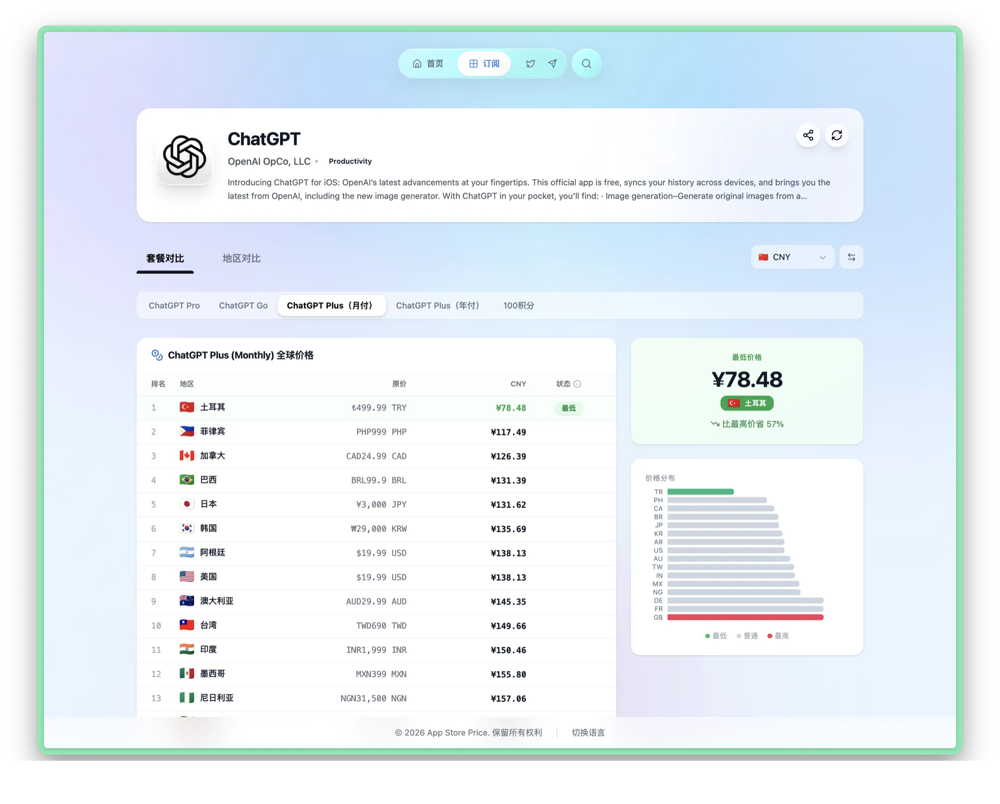
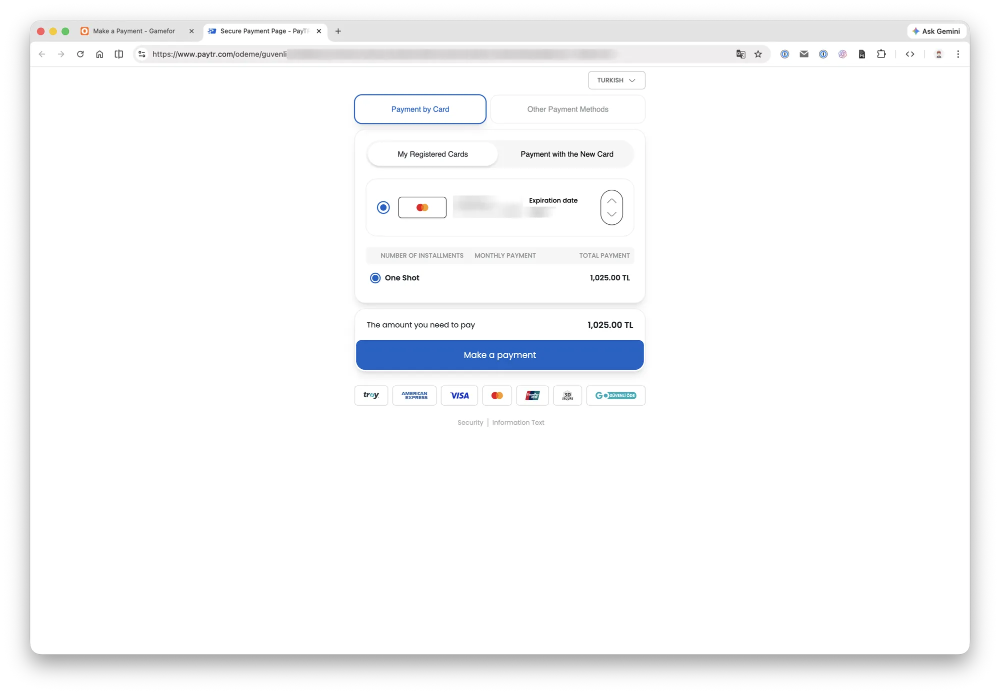
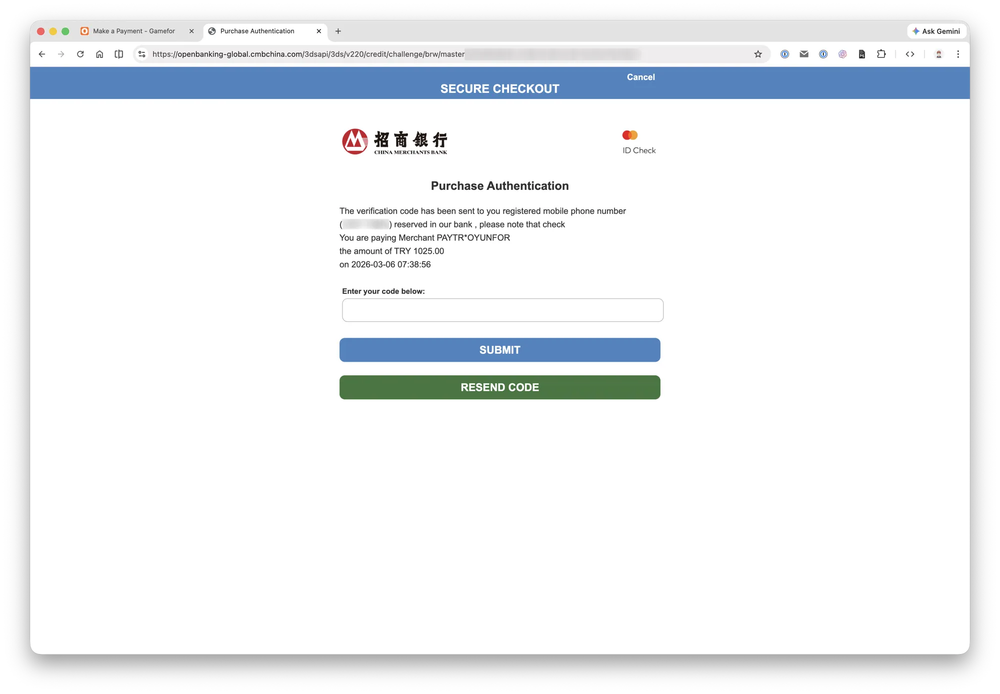
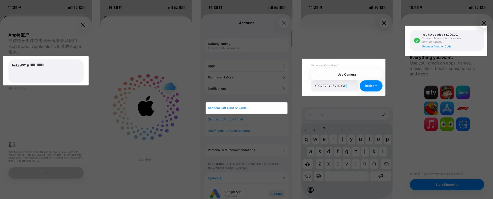
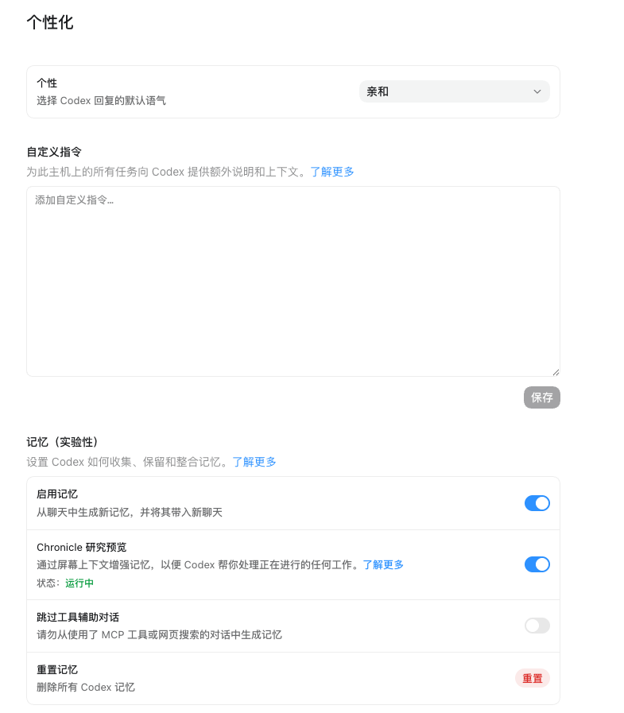

第一遍
只做 01-06，完成安装、登录、选文件夹和第一个低风险任务。
baoge AI Codex 公开教程
先让新手能跑通，再让有业务的人能把 Codex 用在内容、网站、知识库、自动化和真实项目里。
只做 01-06，完成安装、登录、选文件夹和第一个低风险任务。
做 07-11，把任务拆分、权限、Skills、自动化和个人工作台跑起来。
做 12-16，进入 CLI、IDE、AGENTS.md 和沙盒审批。
做 17-19，理解 Cloud、Hooks 和排障，准备真实项目。
01 入门准备
这一节按小白操作来：你只要会打开浏览器、下载软件、双击安装，就能跟着完成。先不要碰重要资料，先用一个练习文件夹跑通。

不要一上来就点下载。先看自己的电脑类型，不然很容易下载错版本。
在浏览器打开官方入口。页面中间通常会出现三个入口：Install the CLI、Download the app、Try the IDE extension。
Download the app。Download for macOS 或对应系统按钮。点 Download for macOS
打开下载好的 .dmg
把 Codex 拖到 Applications
打开“应用程序”里的 Codex
如果拦截：系统设置 → 隐私与安全性 → 仍要打开
看到登录页，安装完成
点 Windows 下载入口
打开安装包或 Microsoft Store
按提示点击安装
打开开始菜单
搜索 Codex
看到登录页，安装完成
第一次使用最容易犯的错，是直接选择桌面、微信资料、客户文件夹。先建一个练习文件夹。
codex-practice。about-me.txt。codex-practice 文件夹。不要只看“打开了”就算完成，要做一次最小验证。
请只读取当前文件夹，不要修改任何文件。 请告诉我： 1. 你看到了哪些文件 2. about-me.txt 里主要写了什么 3. 这个练习文件夹适合用来做什么
如果 Codex 能正确读到 about-me.txt，并且没有改文件，第一节就算完成。
codex-practice 文件夹。about-me.txt。02 入门准备
Codex 的桌面 App、Cloud 任务、多 agent 并行等能力需要付费套餐才能稳定使用。第二章先解决账号、订阅和验证问题，后面才能真正进入 Codex 实战。
免费版 ChatGPT 可以体验基础对话，但 Codex 功能，包括桌面 App、Cloud 任务、多 agent 并行，需要付费套餐才能稳定使用。
| 套餐 | 月费（美元） | Codex 可用情况 |
|---|---|---|
| Free | 免费 | 仅限试用，额度极少 |
| Go | $8 | 在 Codex 中与 Free 没有区别 |
| Plus | $20 | 完整 Codex 访问，日常开发够用 |
| Pro 5x | $100 | Plus 的 5 倍额度，适合中高强度 |
| Pro 20x | $200 | Plus 的 20 倍额度，最大化额度 |
| Business / Enterprise | 与销售团队联系 | 更高级的服务支持 |
对大多数个人开发者来说，Plus（$20/月）是性价比最高的起点。
如果还没有账号，需要先准备一个国外手机号用于接收注册验证码，可以使用专门的接码平台完成注册。
可以试试：hero-sms.com

适合已有 iOS 设备或愿意准备一台的用户。整个流程在国内支付宝内完成充值，不需要境外银行卡。
准备物品：
操作步骤：

给 Apple ID 充值礼品卡：

如果你的核心诉求是降低长期订阅成本，可以参考低价区 App Store 的做法：单独准备一个土耳其区 Apple ID，通过该区礼品卡给 Apple ID 余额充值，再在 ChatGPT iOS App 里用 App Store 应用内购订阅。

适合谁：
先打开 App Store Price 的 ChatGPT 价格页，选择 ChatGPT Plus 月付项，看当前各地区价格。低价区会随 App Store 定价、汇率和税费变化，操作前必须重新核对。
源文建议先准备土耳其节点，并在 IP 检测页面确认当前出口地区。核心原则是：注册 Apple ID、填写地区信息、登录 App Store 时，地区信息要尽量保持一致，减少触发安全验证的概率。

打开 account.apple.com 注册新的 Apple ID。注册时选择土耳其地区，按页面提示填写邮箱、手机号和验证码。Apple 当前页面名称可能会变化，以实际页面为准。

注册完成后，在 Apple 账号或 iPhone / iPad 的 App Store 账户设置里补齐 Payment Address。即使不绑定土耳其本地银行卡，Apple 也可能在购买或兑换时要求补充账单地址。

源文提到土耳其区礼品卡可以通过淘宝、闲鱼等渠道购买，也可以在土耳其数字商品平台购买。它以 oyunfor.com 为示例：注册并登录后，在站内找到 App Store 礼品卡，选择所需面值并加入购物车。

源文示例中，Oyunfor 支持信用卡和 Binance Pay。信用卡页面里会出现不同支付通道，部分通道可能要求土耳其本地支付方式，源文选择了可用的国际卡通道。截图中的示例为 1000 土耳其里拉礼品卡，并叠加约 2.5% 手续费，实际手续费以付款页为准。

随后进入支付页，填写银行卡信息并确认付款。你自己操作时不要把银行卡、验证码、礼品卡兑换码截图发给任何人。

如果银行或支付通道要求 3D Secure / 短信验证码，按页面提示完成验证。

付款成功后，礼品卡通常会通过邮件发送。拿到兑换码后，打开 App Store，点击头像，进入「兑换礼品卡或代码」，把土耳其区礼品卡兑换到同一个土耳其区 Apple ID。

在 iPhone / iPad 的 App Store 登录这个土耳其区 Apple ID，用它下载 ChatGPT App。如果之前 ChatGPT 是用其他地区 Apple ID 下载的，源文建议先删除再用当前 Apple ID 重新下载。打开 ChatGPT App 后登录你的 ChatGPT 账号，进入订阅页，选择 Plus / Pro，用 Apple ID 余额完成 App Store 应用内购。
后续如果开启自动续费，需要保证这个 Apple ID 余额足够；如果余额不足，续费可能失败。
注意事项：
逻辑与苹果礼品卡类似：在安卓设备上切换到对应 Google 账号区域，通过 Google Play 购买礼品卡充值后订阅。有部分用户反映这条路可行，但实测稳定性不如苹果礼品卡，可作为备选方案。
Plus 按 token 计费，日常开发任务普通使用量通常可以撑一整个月。如果额度用完，可以单独购买额外额度，也可以等下月重置。
Pro 的 Codex 使用额度是 Plus 的 5 倍，适合重度用户或需要大量并行任务的场景。普通开发者先从 Plus 开始，不够用再升级。
可以。如果你的设备能正常使用海外区 Apple ID，不需要专门买二手。建议不要在自己常用的国内账号设备上频繁切换 ID，长期使用建议准备一台专用设备。
登录 ChatGPT App 或网页端，在账号设置里确认套餐显示为 Plus 或以上，然后进入 Codex 入口检查功能是否正常可用。
03 入门准备
这一节不讲高深概念，只做一件事：打开 Codex 后，先把界面认清楚。小白只要能说出每个区域干什么，后面做任务就不会乱点。

Codex 桌面 App 可以理解成一个“会干活的项目工作台”：左边选工作范围，中间对话下任务，右边看上下文、权限、变更和验证结果。新手最容易犯的错，是没看清自己选了哪个项目，就开始让 AI 读文件或改文件。
| 区域 | 你要知道什么 | 小白最容易错在哪 |
|---|---|---|
| 项目 / 对话 | 决定 Codex 正在处理哪个文件夹或哪段对话。 | 选错文件夹，把真实资料暴露给练习任务。 |
| 任务对话区 | 看 Codex 的计划、回复、执行过程。 | 只看最后一句“完成了”，不看过程。 |
| 输入框 | 写清目标、范围、限制、输出格式、验收方式。 | 只写“帮我弄一下”。 |
| 上下文文件 | 告诉 Codex 当前能参考哪些文件、截图、网页。 | 一次塞太多资料，结果越跑越乱。 |
| 权限 / 审批 | 决定 Codex 能读、能写、能运行命令到什么程度。 | 一上来给太高权限。 |
| 变更区 | 查看 AI 到底改了哪些文件。 | 不看变更就接受结果。 |
| 终端 / 命令 | 运行本地服务、测试、构建、检查报错。 | 不懂命令也直接执行。 |
| 设置 / 个性化 | 配置账号、权限、记忆、自定义指令和集成。 | 不配置个性化，导致每次都要重新解释自己是谁。 |
Project 决定 Codex 可以看到哪些文件。它就像你把助理带进哪间办公室。进错办公室，再聪明也会做错事。
codex-practice。Codex 的输入框不是普通聊天框。好的任务要包含 5 个部分：目标、范围、限制、输出、验收。
请只读取当前练习文件夹，不要修改任何文件。 目标：帮我了解这个文件夹适合做什么。 范围：只看当前文件夹里的文件。 限制：不要读取上级目录，不要联网，不要创建新文件。 输出：用 5 条 bullet 总结。 验收：最后告诉我你读取了哪些文件。
以后所有任务都按这个结构写，小白的成功率会明显提高。
上下文可以是文件、截图、网页、文字说明。新手不要一次给 30 个文件。先给一个目标文件、一张截图、一段背景，让 Codex 做小闭环。
权限决定 Codex 能做到哪一步。新手第一周默认只用“只读”和“写草稿”，不要直接让它大范围改文件、运行不懂的命令、发布外部内容。
适合总结资料、解释项目、生成建议，不改任何文件。
适合生成 README、课程草稿、FAQ，不覆盖原文件。
适合修改网页、代码、文档。必须看变更。
适合 GitHub、飞书、消息发送。必须人工确认。
Codex 做完任务后，你要看三件事：改了哪些文件、页面能不能打开、命令有没有报错。没有验证，就不算完成。
设置里会有账号、主题、权限、浏览器、电脑操控、Git、Hooks、记忆、个性化等选项。第三节先知道入口在哪里，第 11 节会重点讲个性化和记忆。
新手不要乱开全部权限。每开一个集成，都要知道它能读什么、能写什么、会不会外发。
codex-practice 练习文件夹。请只读取当前练习文件夹，不要修改任何文件。 请告诉我： 1. 当前项目文件夹叫什么 2. 你看到了哪些文件 3. 每个文件大概是做什么的 4. 如果我要继续学习 Codex，下一步应该做什么
04 入门准备
手机端适合发起、补充、审批和跟进任务；桌面端适合读文件、改文件、跑验证。
手机上发一句：请帮我整理今天客户问过的 5 个问题，回到桌面后把它整理成 `questions.md`。
手机语音输入容易有识别错误。涉及客户隐私、报价、账号和合同，必须回到桌面人工确认。
05 入门准备
Codex 真正有价值的地方，是把浏览器、飞书、GitHub、知识库、设计工具连接成流程。
客户问题从微信/飞书进来，先汇总成日报，再变成选题、口播脚本、教程 FAQ，最后沉淀到公开站。
你能画出自己的工具连接图：输入从哪里来、AI 做什么、结果去哪里、谁来确认。
06 入门准备
第一个任务一定要低风险、可检查、有明确输出。不要一上来让它接管整个业务。
把一个资料文件夹整理成 `README.md`，内容包括：这个文件夹有什么、适合做什么、缺什么。
请扫描当前文件夹，不要改动原文件。 请生成一个 README.md 草稿，包含： 1. 文件夹内容概览 2. 可用于课程/内容/案例的资料 3. 缺失资料清单 4. 下一步整理建议 生成前先告诉我你准备读取哪些文件。
把这次成功指令保存成模板。以后所有资料整理任务都从这个模板改。
07 日常工作流
Codex 可以开多个线程，但不是所有任务都适合并行。能并行的是互不影响的任务，不能并行的是会改同一批文件的任务。
如果两个任务都会改 tutorials/index.html，不要并行。一个写完、检查完，再让另一个继续。
一个查官网，一个写案例，一个做截图，一个检查链接。它们互不抢同一个文件，就可以开多个线程。
不要让四个线程各说各的。最后开一个“总控线程”，把资料、草稿、检查结果合并成一份最终页面。
把任务分成“资料组、页面组、检查组、发布组”。不同组并行，同一个文件只允许一个线程改。
你现在只负责查资料，不要修改任何文件。 请输出： 1. 官方来源链接 2. 和本教程相关的新变化 3. 哪些内容需要人工确认 4. 建议更新到哪一节课
请读取资料组、页面组、检查组的结果。 请只合并为一份最终更新建议。 不要直接改页面，先列出： 1. 应该改哪几个文件 2. 每个文件改什么 3. 风险和验证方式
并行结束后必须合并复盘：哪些资料可信、哪些内容进站、哪些需要人工确认，哪些任务不能自动发布。
08 日常工作流
权限不是为了限制 AI，而是为了让 AI 长期可用。越自动化，越要分清什么能读、能改、能发。
公开站只展示方法、脱敏案例、教程和模板。真实客户数据只留在本地或授权系统内。
给自己的项目写一份 `权限边界.md`：AI 能读什么、不能读什么、能改什么、哪些必须问你。
09 日常工作流
Skill 是把一次成功经验变成可复用流程。插件则把工具、Skills、MCP 能力打包成更完整的工作方式。
my-skill/ SKILL.md scripts/ references/ assets/
把你最常做的一件事写成 Skill 草稿：触发条件、输入、步骤、输出、风险边界。
10 日常工作流
自动化不是让 AI 乱发消息，而是定时做“收集、整理、提醒、生成草稿”，关键动作仍然保留人工确认。
`baoge-ai-site-updater` 可以采集公开 Codex 资料，输出 summary、sources、failures，再由人工确认进网站。
写出一个自己的自动化日报：数据从哪里来、每天几点跑、输出到哪里、谁来审核。
11 日常工作流
这一节是把 Codex 从“临时问答工具”变成“长期工作伙伴”的关键。截图里的个性、自定义指令和记忆，是一人公司最应该认真配置的地方。

截图第一块是“个性”。这里不是花哨设置，而是决定 Codex 默认怎么跟你说话。小白建议先选“亲和”，因为它更适合教学、解释和陪跑；做开发审查、交付验收时，可以切到更直接的风格。
| 场景 | 推荐语气 | 为什么 |
|---|---|---|
| 新手学习 Codex | 亲和 | 解释更完整，适合一步一步带着做。 |
| 课程陪跑 / 客户答疑 | 亲和 | 能减少挫败感，适合把复杂事情讲人话。 |
| 代码审查 / 交付验收 | 务实 | 更关注问题、风险、测试和结论。 |
| 只想要结果 | 无个性 | 减少闲聊，适合批处理任务。 |
截图第二块是“自定义指令”。这块最关键：你写进去的内容，会成为 Codex 之后所有任务的默认说明和上下文。它相当于“我是谁、我要做什么、你以后怎么帮我”的长期说明书。
一人公司建议写 5 类信息：
你是我的 AI 一人公司长期搭档。 我的业务是 baoge AI，核心方向是： 1. Codex 公开教程站 2. AI 一人公司实战营 3. 口播智能体和内容自动化 4. 客户问题整理、课程陪跑、AI 工作流搭建 你默认要这样工作： 1. 所有教程都面向小白，步骤要非常细。 2. 能用图片、表格、清单说明的，不要只写大段文字。 3. 先做能落地的版本，再逐步优化。 4. 涉及客户、账号、付款、隐私时，先提醒风险，不要自动外发。 5. 每次改网站都要告诉我文件路径、页面链接和验证结果。
截图第三块是“记忆（实验性）”。开启记忆后，Codex 可以从聊天中生成记忆，并把有用上下文带入新聊天。对我们这种课程和陪跑业务来说，记忆要记的是“长期稳定信息”，不是每一句临时闲聊。
截图里“Chronicle 研究预览”显示状态为运行中。它的意义是通过屏幕上下文增强记忆，让 Codex 更好理解你正在做的工作。对课程站来说，它可以帮助 Codex 理解你当前看的页面、当前改的章节、当前卡住的问题。
但它不是万能的。你仍然要把关键资料沉淀到文件夹、飞书文档、网站内容和工作台里。不要只靠“它应该记得”。
你正在看哪一节、哪张图、哪个页面，Codex 可以更快接上。
真正重要的业务信息，要写进自定义指令、AGENTS.md 或知识库。
记忆生成后要定期检查，错误记忆要删，过期资料要重置。
截图里“跳过工具辅助对话”当前是关闭。它的意思是：不要从使用 MCP 工具或网页搜索的对话中生成记忆。这个默认很合理，因为工具对话里常有临时网页、临时报错、客户素材、测试数据，不一定适合长期记住。
| 设置 | 建议 | 原因 |
|---|---|---|
| 关闭跳过工具辅助对话 | 谨慎 | 工具对话也可能被提炼成记忆，但容易混入临时信息。 |
| 开启跳过工具辅助对话 | 推荐给新手 | 减少把网页抓取、报错、客户素材误存为长期记忆。 |
| 长期项目陪跑 | 看项目情况 | 如果资料已经脱敏、流程稳定，可以保留更多上下文。 |
当 Codex 总是拿旧业务、旧价格、旧课程结构回答你，或者把已经废弃的想法当成当前方案，就该重置或清理记忆。
设置页只是一半，另一半是本地工作台。以后 Codex 做课程、网站、短视频、客户问题整理，都先读这个文件夹。
baoge-workspace/ 00_我是谁.md 01_业务和产品.md 02_客户问题库.md 03_课程体系/ 04_口播智能体/ 05_案例库/ 06_输出模板/ 07_复盘记录/ 08_禁止事项和隐私边界.md
第一天不用写完，先把 00_我是谁.md 和 01_业务和产品.md 写出来，Codex 就能明显更懂你。
baoge-workspace 文件夹。请读取 baoge-workspace 里的核心文件。 请告诉我： 1. 你认为我是谁 2. 我现在最重要的三个业务是什么 3. 今天最应该推进的 5 个任务 4. 哪些信息你建议写入长期记忆 5. 哪些信息不应该记忆
12 CLI 与 IDE
CLI 适合开发者和进阶用户：它在终端里读仓库、改文件、运行命令、检查结果。
请阅读这个仓库的文件结构， 告诉我启动命令、测试命令、 主要页面在哪里。 先不要修改任何文件。
CLI 任务要能留下命令、输出和修改记录。没有验证的改动，不要进入真实项目。
13 CLI 与 IDE
第一次改代码只做小改动：改一个标题、补一段文案、修一个样式，不要一口气重构全站。
把首页标题改成 baoge AI，补一个“最后核对日期”，并运行本地预览确认页面不坏。
请只修改首页相关文件。 目标：把首屏标题改成 baoge AI。 要求： 1. 不改无关文件 2. 改完告诉我文件路径 3. 如果能运行检查，请运行 4. 给出验证结果
把“改页面”的流程沉淀成模板：目标、范围、限制、验证、回滚方式。
14 CLI 与 IDE
IDE 适合边看代码边让 Codex 改局部内容，也适合把任务委托到 Cloud。
不要在没有测试、没有备份、没有 Git 的项目里让 AI 大范围改动。
打开本站项目，让 Codex 找到“交流群”板块，并解释二维码图片是在哪里插入的。
15 进阶与团队
AGENTS.md 是给 Codex 看的项目说明书：怎么启动、怎么测试、能改哪里、不要碰哪里。
# baoge AI 教程站规则 - 首页在 site_prototype/index.html - 样式在 site_prototype/styles.css - 不展示价格和销售话术 - 所有官方信息必须标来源 - 修改后要本地预览
新人、AI、合作伙伴都先读同一份规则，项目就不会一会儿像官网、一会儿像销售页。
为自己的课程、网站或客户项目写一份 AGENTS.md 草稿。
16 进阶与团队
沙盒决定 Codex 能碰到哪里，审批决定高风险动作是否需要你点头。
就像请助理进办公室：可以看指定文件柜，可以写草稿，但不能私自盖章、转账、发合同。
练习项目可以放宽；客户项目、公司项目、真实账号必须收紧。
17 进阶与团队
Cloud 适合长任务、并行任务和不想占用本机的任务。适合让 Codex 在云端读仓库、做改动、生成 PR。
云端任务必须写清仓库、目标、限制、测试方式和交付格式，否则容易变成一堆看似完成的改动。
看 PR、测试结果、截图、变更说明，而不是只看 AI 说“完成了”。
18 进阶与团队
Hooks 是在任务前后自动触发检查或动作。它适合团队标准化，不适合新手乱配。
每次更新教程后，自动检查页面是否能打开、图片是否存在、官方链接是否可访问。
Hook 如果配置错，可能每次任务都失败，或者自动执行你没想到的命令。先在练习项目里试。
先写 Hook 需求，不急着写代码：什么时候触发、做什么、失败怎么办。
19 进阶与团队
遇到问题不要先怀疑自己不会用，先按清单排查：账号、权限、路径、网络、依赖、模型、项目状态。
如果输出空泛，通常是资料不足、目标不清、边界没写、验收标准缺失。回到任务模板重写。
本页不是复制第三方教程原文，而是参考公开信息结构后，改写成 baoge AI 的实操教程。涉及功能和权限，以官方页面为准。
本站预留了共建入口。你可以手动改教程、补截图、加官方来源，也可以让 Codex 帮你更新。